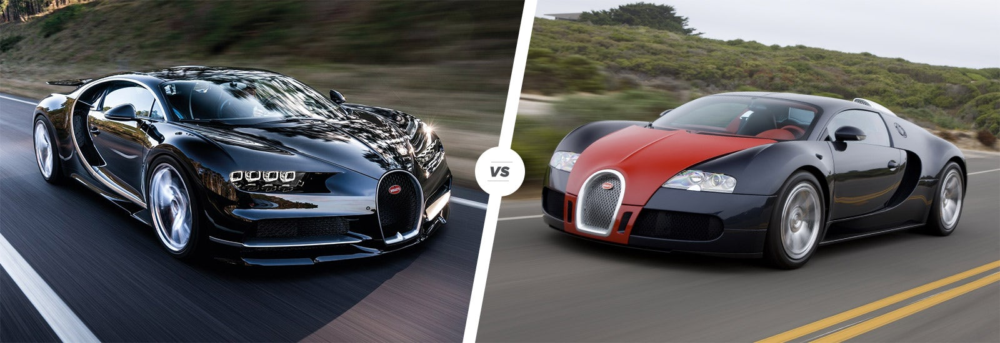

But this beckons a question. Why is Bugatti Chiron- manufactured in Molsheim, in France- making such a noise in globetrotting headlines? What has happened? Well, believe it or not, but the sports car has just broken the production car speed record when a timed run conducted recently clocked its overall speed. The famous sports car had notched up an incredible, mind-boggling speed of 304.773 mph
If you haven’t yet wrapped your brains around the figure, then do the math. The Bugatti Chiron clocked the Top Speed of approximately 490. 48 km/hr. And just where did this speed test run take place? Well, the venue was the salubrious Volkswagen group Test track in Ehra-Lessien, located in the German state of Lower Saxony.
Truth be told, to anyone, regardless of one being an auto expert, a motorsport enthusiast, a race driver, such ballsy speed can, in turn, seem overwhelming. It remains to be seen whether one gets to hear about a production car lapping up a treacherously quick 304 miles an hour worth of speed?
Bugatti Chiron vs Veyron styling
The Chiron’s styling is clearly influenced by the Veyron which, in turn, took inspiration from Bugattis of the distant past. The stunning curve that loops around the side window is a clear nod to the two-tone paint finishes of models like the Type 46, while the crease that runs through the centre of the car from front to rear is inspired by the Type 57SC Atlantic of the 1930s. Apart from that, the styling is heavily influenced by aerodynamics – even the headlight recesses funnel cooling air to the ginormous front brakes.

While the car is a 17-year-old design, the Veyron has aged with wonderful grace. Its design is understated and classy, yet the squat proportions, particularly around the rear haunches, hint at the huge power lurking inside. Only time can tell whether the Chiron will look as cool after the same period of time.
Source/Reference: https://www.cars24.com/blog/bugatti-chiron-breaks-speed-record-production-cars/